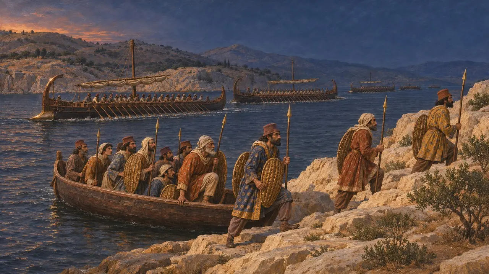
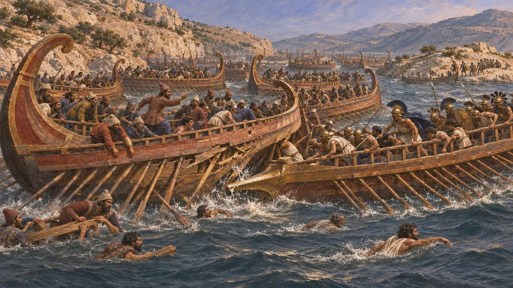
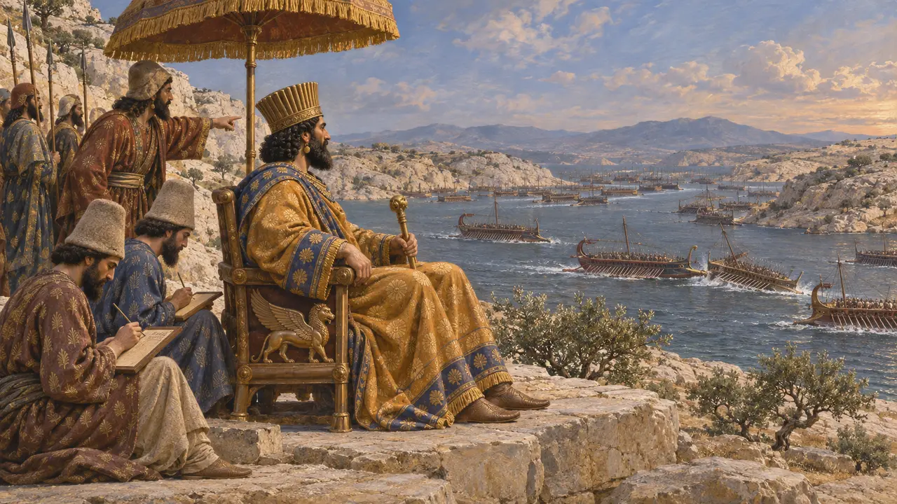
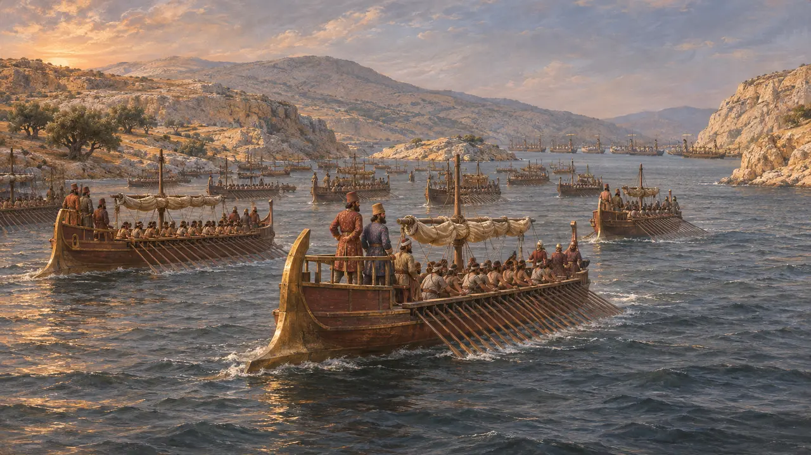
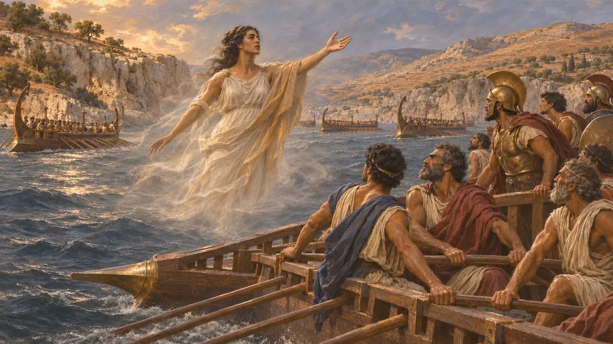

Ansiklopedi › Savaşlar ve olaylar

Salamis, MÖ 480'in yaz sonunda ya da sonbahar başında Salamis Adası ile Attika kıyısı arasındaki dar boğazda yapılan deniz savaşıdır. Spartalı Eurybiades'in komuta ettiği, fiilen ise Atinalı Themistokles'in yönlendirdiği Yunan donanması, Kserkses Atina'yı ele geçirdikten kısa süre sonra Kral'ın donanmasını yendi. Bu yenilgi, Perslerin denizde çabuk zafer umutlarını bitirdi ve Kserkses'in Asya'ya dönmesine yol açtı; Yunanistan'da ordusuyla birlikte Mardonios'u bıraktı.
Oyunda: Oyunun Kroniği Herodotos'u izler: Sikinnos'un mesajı, kapatılan boğaz, seyreden Kserkses, Artemisia, Ariabignes ve Psyttaleia. Kral'ın sözü Herodotos'un aktarımıdır ve iki geçidin de kapatılıp kapatılmadığı tartışmalıdır.

Themistokles'in mesajı ve gece hareketleri
Antik anlatıHerodotos'a göre Themistokles, müttefik donanmanın dağılıp İsthmos'a doğru yelken açmasından korkarak ev kölesi Sikinnos'u Pers komutanlarına, Yunanlıların kaçmaya niyetli olduğunu bildirmesi için gönderdi. Herodotos'a göre o gece Kral'ın gemileri boğazı kapatmak üzere harekete geçti ve kıyıya vuran adamlarla ilgilenmek için Psyttaleia adacığına asker çıkarıldı. Aiskhylos da Kserkses'e yalancı bir haber getiren bir Yunan'a yer verir ve mürettebat bütün gece nöbette kürek çeker.
Herodotus 8.75-76; Aeschylus, Persians

Boğazdaki çarpışmalar
Antik anlatıHerodotos, herkesin tam olarak nasıl savaştığını söyleyemeyeceğini, ancak daracık suda Kralın gemilerinin düzenini yitirdiğini, öndeki gemiler arkadan bastıran gemilerin üzerine dönünce pek çoğunun parçalandığını söyler. Dareios'un oğlu ve İon ile Karya gemilerinin amirali Ariabignes öldürüldü. Gemileri batan Yunanlıların çoğu Salamis'e yüzdü; Kralın adamlarının çoğu ise yüzme bilmediğinden boğuldu. Ardından Aristeides hoplitleri Psyttaleia'ya çıkardı ve oradaki Persleri öldürdü.
Herodotus 7.97, 8.86-89, 8.95

Kserkses'in Aigaleos'tan seyretmesi
Antik anlatıHerodotos, Kserkses'in Aigaleos Dağı'nın eteğinde, iyi savaşan bölükbaşılarının adlarını yazan kâtiplerle birlikte oturduğunu söyler. Atina gemisince kovalanan Halikarnassoslu Artemisia'nın kendi tarafının bir gemisine çarptığını, Kserkses'in de onun bir düşman gemisi batırdığını sanarak adamlarının kadına, kadınlarının erkeğe dönüştüğünü söylediğini anlatır. Fenikeli bölükbaşılar kayıplarının suçunu İonlar'a yükleyince Kserkses onların başlarını uçurttu.
Herodotus 8.87-90

Sayılar, konumlar ve gece manevrası
TartışmalıHiçbir Pers belgesi Salamis'ten söz etmez. Herodotos Yunanlara yaklaşık 380 gemi verir ve Kralın hâlâ bin küsur gemisi olduğunu ima eder; orada savaşmış olabilecek Aiskhylos ise 1.207 gemiye karşı 310 gemi verir, tarihçiler de Pers rakamlarının çok abartılı olduğunu düşünür. Ayrıca hatların nerede durduğunu, hangi adacığın Psyttaleia olduğunu, Diodoros'un dediği gibi Mısır gemilerinin batı geçidini gerçekten kapatıp kapatmadığını ve Perslerin kandırılıp kandırılmadığını ya da zaten saldırmayı düşünüp düşünmediğini tartışırlar.
Herodotus 8.48, 8.66, 8.82; Aeschylus, Persians; Diodorus 11.17; J. F. Lazenby, The Defence of Greece 490-479 BC, 1993

Savaştan sonra anlatılan hikâyeler
Geç dönem efsanesiHerodotos, Korinthli amiral Adeimantos'un savaşın başında kaçtığı ve ancak esrarengiz bir kayık ona Yunanlıların kazandığını söyleyince geri döndüğü yönündeki Atina iddiasını aktarır; Korinthlilerin ve Yunanistan'ın geri kalanının bunu yalanladığını da ekler. Ayrıca hayalet bir kadının belirip Yunan donanmasına seslenerek daha ne kadar geri kürek çekeceklerini sorduğu bir hikâyeyi de kaydeder. Bu tür anlatılar, savaştan sonra Yunan kentleri arasındaki çekişmeleri yansıtır.
Herodotus 8.84, 8.94
Kaynaklar
- Herodotus 8.40-97
- Aeschylus, Persians
- Diodorus 11.15-19
- Plutarch, Themistocles
- J. F. Lazenby, The Defence of Greece 490-479 BC, 1993
- B. Strauss, The Battle of Salamis, 2004